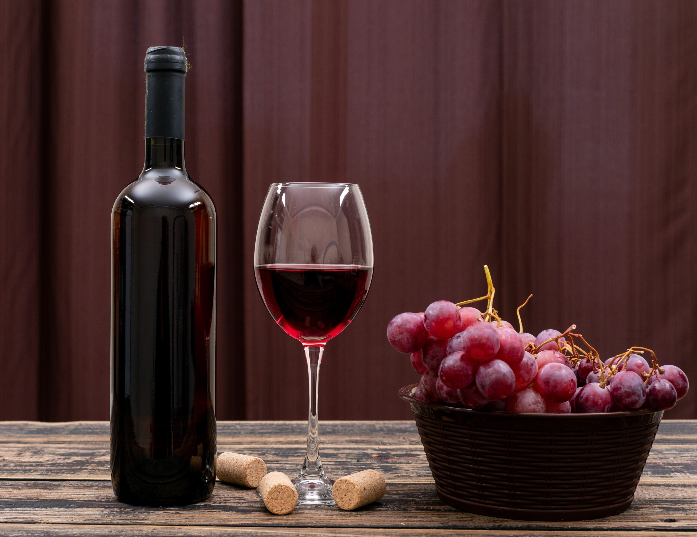

EXPERIENCIA "FAMIGLIA"
"FAMIGLIA"EXPERIENCE"
Duración de la Experiencia: 90 minutos
Cupos: Mínimo 2 personas - Máximo 12 personas.
Modalidad / Reservas: Con reserva previa. Mínimo 24 Hs. Español - Inglés - Portugués
Degustación dirigida de vinos y espumantes: Vinos: Gran Familia Malbec, Familia Malbec, Familia Viognier / Espumante: Familia Extra Brut
Horarios: 10:00 / 12:00 / 15:30